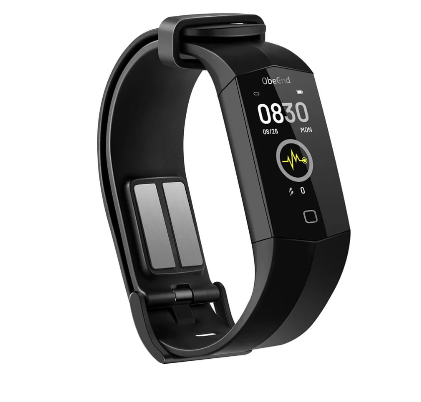
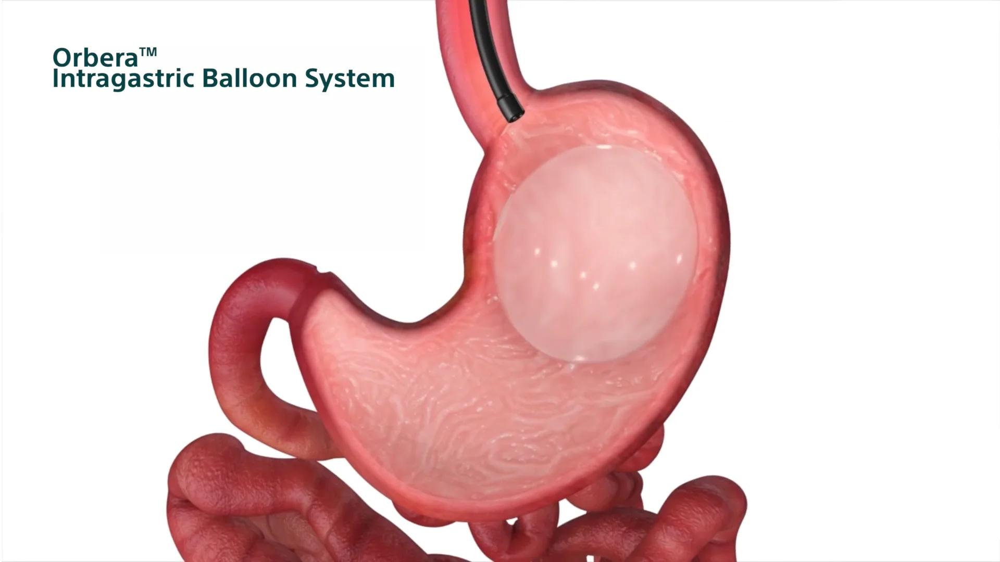

两款减重产品，
真的能帮助人们减肥吗？
ObeEnd 的腕部电刺激，与 Orbera365 的胃内球囊。
从技术原理、临床证据到真实体验，看两条不同的减重路径。
ObeEnd
手腕电刺激
佩戴式 · 非侵入Orbera365
胃内球囊
胃镜置入 · 医疗干预同样指向“减少进食”，
技术路径与医学证据却有明显差异。
OBEEND / 腕部电刺激
从手腕开始的食欲调节探索
ObeEnd 舒乐定 · 减肥手环
采用经皮电神经刺激（TENS），结合腕部电极、智能监测与手机 APP，尝试通过神经调节影响进食行为。
* 原稿注明价格来自展会期间报道，未提供具体报道链接；不代表当前售价。产品参数以对应型号官方说明为准。

为什么刺激手腕，可能影响食欲？
这是一条机制假说：从腕部刺激，尝试影响胃肠相关信号，最终调节进食行为。
- 01
PC6 内关穴
腕横纹上约三指宽。
- 02
低强度电脉冲
刺激正中神经附近组织。
- 03
神经调节
尝试影响胃肠相关信号。
- 04
进食行为
目标是降低食欲与热量摄入。
有反馈，但证据还有多强？
品牌引述的热量摄入降幅
原始研究细节尚未充分核实，不能直接当作长期体重降幅。
记者现场试戴时间
感受到电脉冲，或短时间觉得饥饿感减轻，都不足以证明长期减重有效。
原稿资料：ObeEnd 官网、临床试验登记 NCT06411483、媒体现场体验。试验登记不等于已有有效性结果，媒体报道原始链接未在材料中列出。
佩戴体验
- 体验者可感知脉冲式刺激。
- 部分人主述饥饿感减轻。
- 品牌官网展示积极评价。
适用限制
- 原稿提醒关注起搏器、心律失常等禁忌。
- 癫痫及部分疾病人群需谨慎评估。
- 需要考虑皮肤接触与刺激耐受。
媒体试戴与官网证言均不能独立证明有效率；具体适用要求以对应产品说明书为准。原稿结论：具有技术探索价值，但仍缺少可信的长期体重变化数据。
ORBERA365 / 胃内球囊
通过胃内空间占据，帮助更早产生饱腹感
Orbera365 通过胃镜置入，以生理盐水填充，留置时间最多 12 个月。它属于需要医疗评估、内镜操作和持续随访的干预方式。
产品：Boston Scientific / Apollo Endosurgery 技术体系。

一只球囊，怎样带来饱腹感？
胃镜放入球囊后注入生理盐水，球囊占据部分胃内空间，帮助更早产生饱腹感。原稿引用的充盈量通常为 400–700 mL。
这一治疗需要配合饮食与行为管理。
与司美格鲁肽有什么不同？
Orbera365：通过物理方式占据胃内空间。
司美格鲁肽：属于 GLP-1 受体激动剂，作用于食欲调节通路，并延缓胃排空。
二者都可影响饱腹感，但作用机制、适应症及风险不同。
从置入到取出，需要完整的治疗流程
- 01
评估
BMI 与胃部状况。
- 02
置入
胃镜与镇静 / 麻醉。
- 03
充盈
400–700 mL。
- 04
随访
饮食调整与体重管理。
- 05
取出
最长 12 个月。
初期可能出现恶心、呕吐、腹痛；不耐受者可能需要提前取出。原稿来源标注为 Orbera365 产品说明书、临床研究及 FDA Wegovy 说明资料，具体文档链接未全部列出。
CLINICAL EVIDENCE / 效果与风险
临床数据：能减多少，又要承担什么？
ORBERA365 / 平均减重
15.88 kg1,149 人前瞻性队列研究
Wiggins 等发表于 Obesity Surgery（2024）。其中 954 人提供了后续体重记录。
这是观察研究，不代表因果效应。平均值也不等于每个人的预期结果。
疗效之外，也要看到风险
并发症记录
60 / 1,149
因不耐受提前取出
50 / 1,149
严重并发症
2 / 1,149
以上为原稿引用的同一项研究数据。各指标分别呈现，不作加总。阅读研究全文 · DOI：10.1007/s11695-023-06953-0。
SIDE BY SIDE / 产品对比
两条技术路径，一张对比表
评估产品时，使用便利性与医学证据需要一起看。
| 维度 | ObeEnd | Orbera365 |
|---|---|---|
| 技术 | 腕部电刺激 | 胃内空间占据 |
| 操作 | 日常佩戴 | 胃镜置入与取出 |
| 证据 | 长期减重证据有限 | 已有较大样本临床研究 |
| 主要负担 | 刺激耐受与皮肤接触 | 胃肠不适及医疗并发症 |
| 适用 | 谨慎评估产品主张 | 须专业医疗评估 |
比较基于原稿引用的厂商产品页、官方说明书及公开研究；两者均不能保证体重长期不反弹。
最后，一个值得留下的问题
减重技术越来越多样，
我们如何判断它的价值？
效果、安全、可持续。
这三个维度，需要放在一起看。
REFERENCES / 原稿资料来源
继续阅读
- ObeEnd · 产品信息
品牌产品介绍、技术主张及产品图。
- Boston Scientific · Orbera 产品页
原稿提供的地区产品链接；不同型号和地区的说明可能不同。
- Wiggins et al. · Obesity Surgery（2024）
DOI：10.1007/s11695-023-06953-0。
- ClinicalTrials.gov · NCT06411483
原稿所引临床试验登记。
- FDA · Weight-loss and Weight-management Devices
减重与体重管理设备相关资料。
本页按 2026 年 11 月 12 日分享材料整理，保留其数据和证据边界。个别产品体验、价格来自原稿所引展会报道，不代表实时信息。本文用于分享交流，不作为个人诊疗建议。